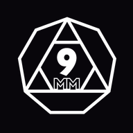
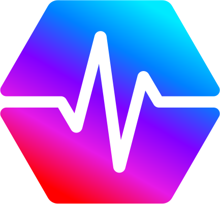
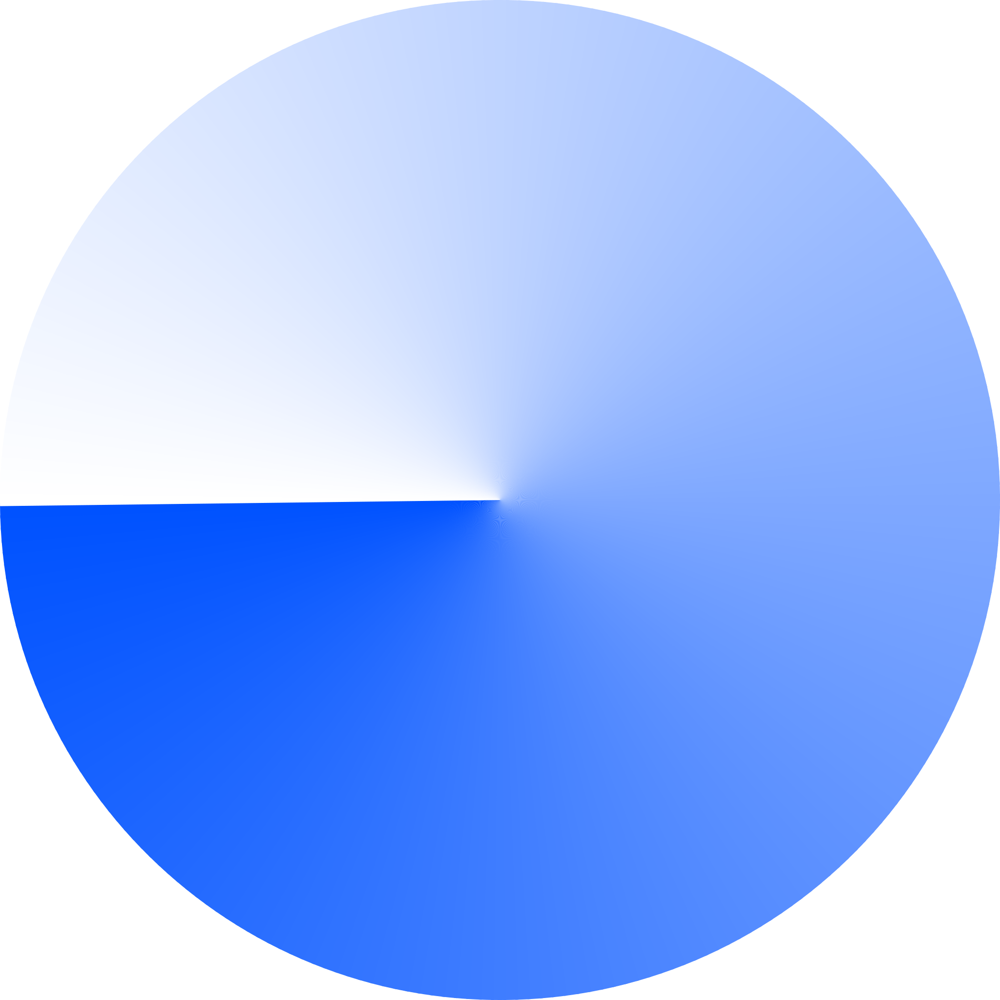
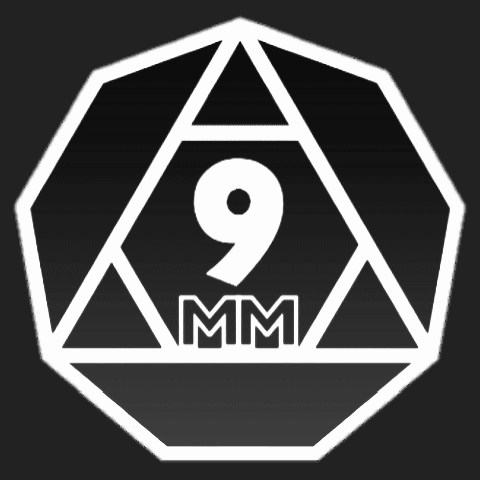
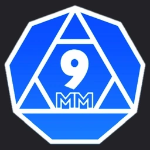
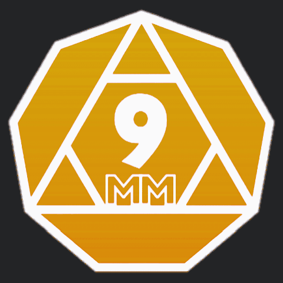
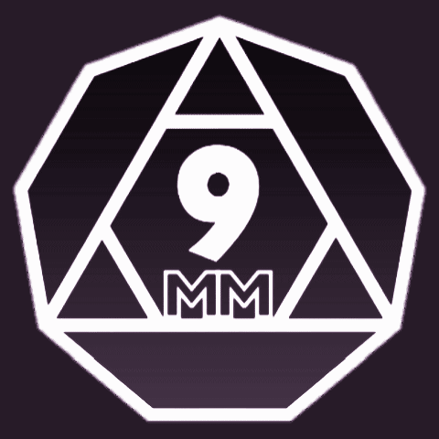
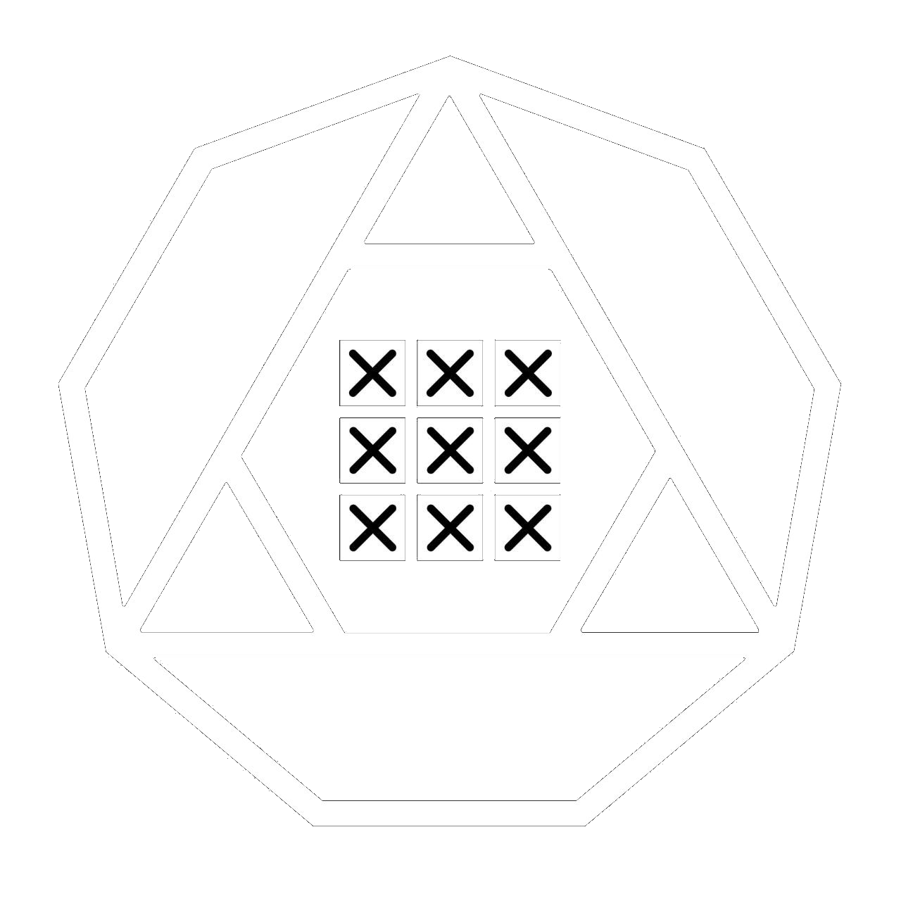

Decentralized. Efficient. Yours. — the canonical brand reference
for every 9MM Pro frontend. This page is rendered from the pack's own
ui/9mm.css, fonts, and logos: every component below is the live shared
implementation, with the exact markup to copy.
One mark — a heptagon containing a triangle with 9/MM. Three color variants,
SVG masters in logo/svg/. White on ink is the primary usage. Minimum render height 24px;
clear space ≥ 25% of mark width on all sides.
9mm-mark-white.svgON DARK
9mm-mark-black.svgON LIGHT
9mm-mark-brass.svgACCENT
02
COLOR
Brass on ink. Values below are computed live from tokens/colors.css —
flip the MODE toggle to see the light theme. Click any swatch to copy its hex.
// BRASS — BRAND_ACCENT
brass
brass-hot
brass-deep
// INK — SURFACES
ink-950 · page
ink-900 · card
ink-800 · input
ink-700 · secondary
ink-600 · muted
// FOREGROUND
fg
fg-muted
fg-subtle
// SEMANTIC
success
warn
danger
03
TYPOGRAPHY
JetBrains Mono carries the brand — display, labels, data. Inter handles body copy.
Both self-hosted from fonts/ (this page is using them right now).
// JETBRAINS_MONO — DISPLAY / LABELS / DATA
300 LIGHTCross-chain price discovery
400 REGULAR0x9a4e…c8a8 · 1,337.42 XCH
600 SEMIBOLDXCH_TERMINAL // ONLINE
800 EXTRABOLDDECENTRALIZED.
// INTER — BODY
400 / 17PX9MM Pro is a multi-chain DeFi suite: V2/V3 DEX, the 9x aggregator, XCH Terminal for Chia markets, and revenue-share claims across PulseChain, Base, Sonic, and Ethereum.
600 / 17PXNon-custodial, self-custody execution. No account required.
// TRACKING_TOKENS
LABEL · 0.2EMSECTION_LABEL_CONVENTION
WIDE · 0.25EMHERO_EYEBROW
TIGHT · -0.03EMDisplay headline
04
COMPONENT_REFERENCE
Every shared class in ui/9mm.css, rendered live with the exact
markup to copy. Import the file — never re-implement these locally. Terminal / tactical HUD:
hairlines over shadows, brackets over rounded corners, monospace labels with underscores.
// BRACKET_CARD — the signature container (hover: corners extend)
One library: lucide-react. 14–16px inline with labels,
18–20px standalone controls, 28px token/chain avatars (those come from assets/, not lucide).
Default strokeWidth 2 (1.5 for dense data visuals). Icons inherit currentColor from their
context — never hardcode a hex into an icon.
import { ArrowRight } from "lucide-react"
<ArrowRight size={16} /> // inline with a label
<X size={20} /> // standalone control
05
TAILWIND_RECIPES
Real utility combinations lifted from the live sites (landing, xch, claim) —
copy the class strings verbatim. Surfaces are solid ink
(bg-ink-900 family), square corners, hairline borders.
Note: the landing codebase still aliases brass to red-500 (legacy Fumadocs theme) —
in new code always use the brass tokens shown here.
// PANEL — the basic solid surface
~/9mm.pro v3.0.0 One hub for the active 9MM product suite.
Body copy switches to Inter (font-sans) at text-fg/70 with relaxed leading for anything longer than a label.
METADATA — TEXT-FG/40, 10PX, TRACKING_LABEL
text-fg font-bold /* headings — mono */text-fg/90 tracking-[0.06em]/* subheads */font-sans text-fg/70 leading-relaxed/* body prose — Inter */text-fg/40 text-[10px] tracking-[0.2em]/* metadata — ui/9mm.css keeps these AA-legible in both themes */
06
FAVICONS_&_ASSETS
The full favicon set ships in favicon/ with a paste-ready head snippet.
Chain, token, and protocol marks live in assets/.
// FAVICON_SET
16
32

APPLE 180

CHROME 192
CHROME 512
// CHAINS


// 9MM_TOKEN + PROTOCOLS





07
USAGE
// TAILWIND_V4 (THE_STANDARD_PATH)
/* globals.css — reference this repo (submodule or
vendored pinned copy), then ONE import: */
@import "tailwindcss";
@import "<path>/ui/9mm.css";
@import "<path>/fonts/fonts.css";
/* tokens + @theme utilities + every component
class above. Delete local copies — local
copies are how the sites drifted. */
// PLAIN_CSS / NO_TAILWIND
<!-- same file works without Tailwind
(browsers skip the @theme block) -->
<link rel="stylesheet" href="ui/9mm.css">
<link rel="stylesheet" href="fonts/fonts.css">
/* then: */
color: var(--color-brass);
font-family: var(--font-mono);
/* dark mode: add .dark to <html> */